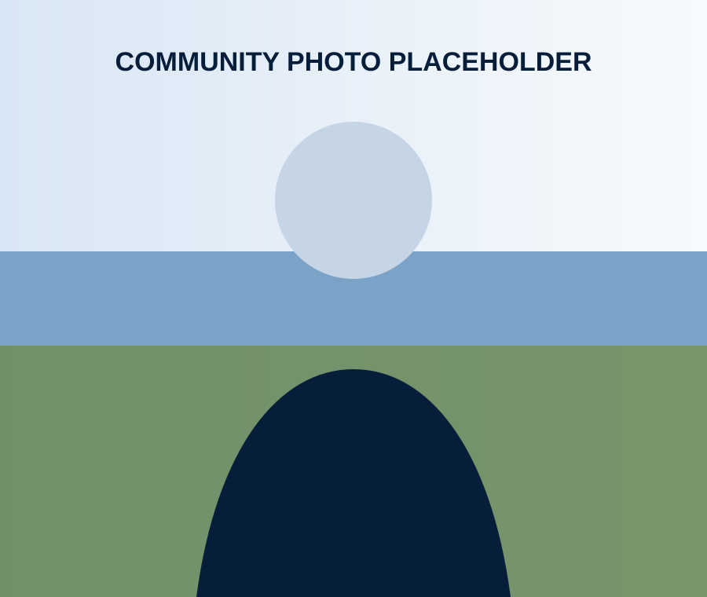

Housing
Support smart, affordable housing solutions that meet the needs of families and workforce while preserving neighborhood character.
Experienced Leadership
Over 20 years of service to Savage through public leadership, business management, and military service. Working together for a stronger community and a better future.
20+ years serving Savage
36+ years as owner of R & C Drafting
20 years of service, Sergeant First Class
Practical solutions that work

Meet Bob
I’ve called Savage home for decades. I’ve raised my family here, built a business here, and served our community in countless ways. I’m running for Scott County Commissioner because I believe in practical solutions, responsible leadership, and putting residents first.
Throughout my life — whether in the military, in business, or in public service — I’ve focused on listening to people, solving problems, and getting results.
Proud husband, father, and grandfather.
Dedicated to improving quality of life for all residents.
A record of service to country and community.
Focused on results, responsibility, and integrity.
Public service isn’t about politics. It’s about solving problems and helping our communities thrive.
Priorities
As your Scott County Commissioner, I will work every day to address the challenges we face and create opportunities for a stronger, safer, and more prosperous community.
Support smart, affordable housing solutions that meet the needs of families and workforce while preserving neighborhood character.
Ensure communities remain safe through support for law enforcement, emergency services, and mental health resources.
Foster a strong local economy by supporting small businesses, attracting investment, and creating quality jobs.
Improve roads, expand transit options, and plan for the future to keep our county moving efficiently and safely.
Be a responsible steward of taxpayer dollars and prioritize long-term planning that delivers results.
Protect and enhance parks, trails, and natural resources for today and future generations.
Partner with schools and organizations to support students, educators, and lifelong learning.
Deliver reliable county services that improve quality of life and support our most vulnerable residents.
Experience You Can Trust
From military service to business leadership and public office, Bob has dedicated his life to leading, building, and serving our community.
Events
I enjoy meeting residents, listening to your ideas, and talking about the future of Scott County. Join me at an upcoming event.
9:00 AM – 10:30 AM
Savage City Hall
Stop by for coffee and great conversation. I’d love to hear your thoughts and answer your questions.
1:00 PM – 3:00 PM
Dakota Ridge Park Pavilion
Join me for an afternoon in the park. Let’s talk about what matters most to our community.
10:00 AM
Downtown Savage
Come out and celebrate our country and community. I hope to see you along the parade route.
Get In Touch
Your ideas, concerns, and feedback help shape a stronger Scott County. I’d love to hear from you.
Every contribution helps share Bob’s message and keep the campaign moving forward.